Aufladen, Sprinten, Reinfallen
Würfe lassen sich jetzt aufladen, Q ist Sprint, E die Ausweichrolle. Daneben geworfene Birnen hinterlassen Elektropfützen, im Wald und im Dorf lauern Fallen. Und mit T gibt es Emotes, Achselfurz inklusive.

Das Partyspiel, in dem Glühbirnen fliegen. Werfen, ausweichen, nicht erwischen lassen.
In BULBFIGHT treten Strichmännchen in Teams gegeneinander an, und die Munition sind Glühbirnen. Das Ganze ist simpel, albern und laut: Cartoon-Look, eine sonnige Strand-Insel und Sounds, die selbst mit dem Mund gemacht werden. Im Moment sind es noch Platzhalter.
Eine Runde dauert nur ein, zwei Minuten. Genau richtig für „Noch eine!“.

Das ist im aktuellen Demo-Stand schon spielbar.
Daneben geworfen? Dann bleibt drei Sekunden lang eine knisternde Pfütze liegen. Wer hineinläuft, kriegt einen Schlag und ist zwei Sekunden langsamer. Nur der Werfer selbst ist sicher.
Im Wald warten Stolperseile und Bärenfallen, im Dorf Krähenfüße, die dich bremsen. Wer drüberspringt, kommt heil durch. Ausgelöste Fallen sind 15 Sekunden lang entschärft.
T gedrückt halten öffnet das Emote-Rad: Klatschen, Tanzen, Kuss zuwerfen, Zeigen, Daumen hoch, Hallo und natürlich der Achselfurz.
Gespielt wird bis zu einer festen Zahl an Rundensiegen, eins bis fünf. Danach steigen die Gewinner aufs Podest, mit Konfetti.
Vor dem Match stehen drei zufällige Maps zur Wahl. Alle stimmen mit 1, 2 oder 3 ab, die Bots auch. Gibt es keine Mehrheit, entscheidet ein Glücksrad.
Drei Grafikstufen, Niedrig, Mittel und Hoch, und auf Wunsch eine FPS-Anzeige. So läuft BULBFIGHT auch auf älteren Laptops flüssig.
Kurz tippen wirft die Birne in einem weichen, hohen Bogen. Hältst du die Taste bis zu 0,65 Sekunden, fliegt sie schnell und fast gerade, ein Ring zeigt die Stärke. Dahinter zieht sie eine Leuchtspur her.
Mit Q sprintest du zwei Sekunden lang 30 Prozent schneller, mit E rollst du zur Seite und bist dabei immun. Dazu Schleichen mit leisen Schritten und Sprungfedern, die dich etwa fünf Meter hoch katapultieren: im Wald Fliegenpilze, im Dorf Taiko-Trommeln, in der Turnhalle Sprungbretter.
Ein Treffer gibt einen Stromschlag mit Röntgen-Blitz. Danach bist du kurz gelähmt und ein paar Sekunden immun.
Farbe, Hut und Gesicht kannst du selbst wählen: vom Zylinder bis zur Krone. Weitere Kosmetik ist geplant.
Nach jeder Runde gibt es Auszeichnungen wie „Meiste Treffer“, „Wurfmaschine“ und natürlich „Größter Angsthase“.
Im Moment im gleichen Netzwerk und gegen Bots in drei Stufen: Leicht, Mittel und Schwer. Modus, Map, Bots und Siege stellt der Host auch mitten im Spiel im Pausenmenü um. Online-Lobbys mit Freunden über Steam sind der nächste große Schritt.
Jede Runde startet mit einem Countdown. Bis zum „Los!“ stehen alle still, keiner bekommt einen Vorsprung.
Ein Ring füllt sich, bis die nächste Birne bereit ist. Bei einem Treffer blitzen vier Striche auf.
Lichtblitz und Ring, wenn eine Birne zerplatzt, Staub bei der Landung, weiche Überblendungen und Kantenglättung.
Jeder Modus ist ein eigener Regelsatz. Weitere kommen dazu, sobald sie sich gut anfühlen.
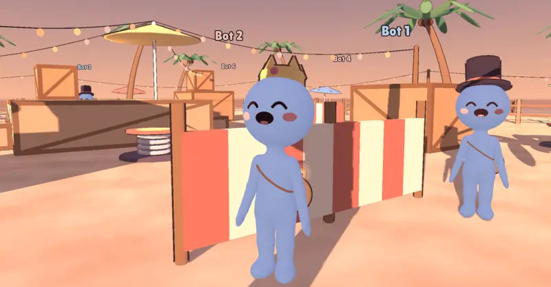
Jeder Treffer kostet ein Leben. Das Team, das zuerst komplett raus ist, verliert. Läuft die Zeit ab, gewinnt das Team mit mehr Leben.

Der Fänger hat eine Birne über dem Kopf. Wer getroffen wird, ist der neue Fänger. Wer am Ende noch Fänger ist, hat verloren.
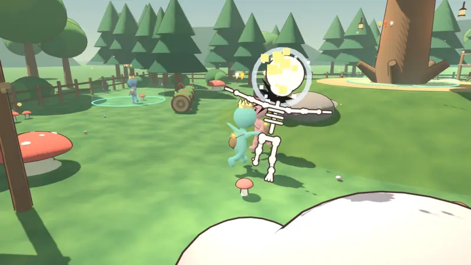
Jede Farbe trifft dich nur einmal, mit allen drei bist du raus. Mit 1, 2 und 3 oder dem Mausrad wählst du, welche Farbe du wirfst. In einer Freizone löschst du deine älteste Farbe wieder.
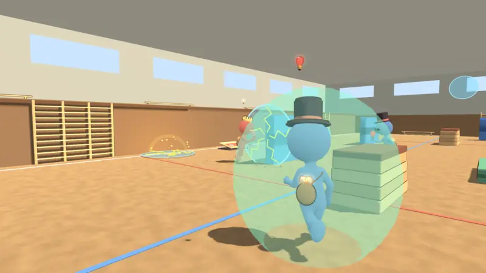
Wie Farben, aber im Team. Pro Team wird ein Heiler ausgelost, alle anderen sind Fänger. Trifft der Heiler einen Teamkollegen mit einer Farbe, die dieser schon trägt, ist sie wieder weg. Gegner darf er erst ausschalten, wenn seine Fänger raus sind. Mit R werfen Fänger doppelt, der Heiler hält ein Schild hoch. Am Ende gewinnt das Team mit weniger Farben.
Darüber denken wir nach. Nichts davon ist versprochen, manches wird sich beim Ausprobieren noch ändern.
Jede Map spielt sich anders, und Strand und Wald verändern sich sogar während der Runde. Die Map wählt der Host im Menü, oder alle stimmen vor dem Match über drei zufällige Maps ab. Mitspieler laden sie automatisch.

Eine Sandinsel im Abendlicht. Flach und offen, mit Kisten, gestreiften Windschutzen und einem Holzdeck in der Mitte.
Neu: Ebbe und Flut. Bei Flut steht die Insel knietief unter Wasser. Du watest langsamer, springst weniger hoch und jeder Schritt platscht. Trocken bleiben nur das Deck, die Kisten und zwei neue Dünen.
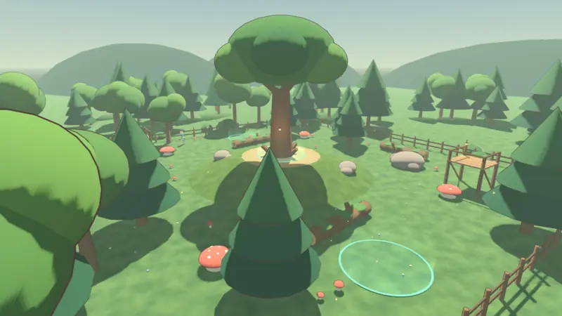
Eine Lichtung mit Höhenunterschieden. Auf dem Hügel in der Mitte steht ein alter Riesenbaum, auf die zwei Hochsitze kommst du über den Fliegenpilz davor.
Neu: Nebel. Immer wieder zieht dichter Nebel auf. Dann siehst du nur noch etwa 14 Meter weit, die Bots auch, und Namen sind nur aus der Nähe zu lesen.
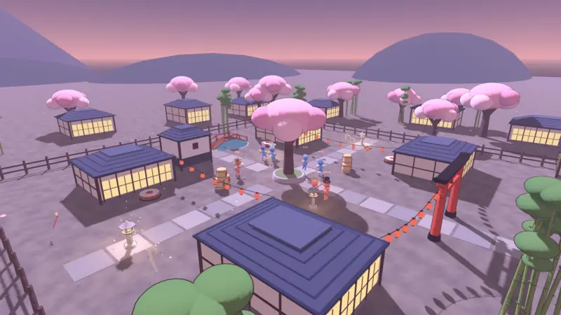
Ein Dorfplatz in der Abenddämmerung mit Kirschbaum in der Mitte, Torii, Teich mit Bogenbrücke und Laternenketten. Vier Häuser und ein Speicher haben begehbare Dächer, durch die enge Gasse geht es im Zickzack nach oben.
Nur hier: Ninja-Skills. Wandlauf, Wandsprung, Rauchbombe und Blitz-Dash. Mehr dazu
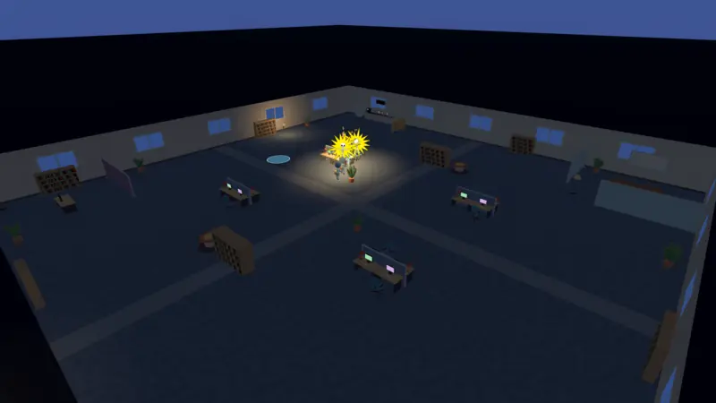
Ein Großraumbüro am Abend mit vier Schreibtischinseln, Kaffeeküche, Besprechungsraum, Chefbüro und Kopierecke. Kaffee macht dich sechs Sekunden lang schneller, auf einem Bürostuhl rollst du kurz durch den Raum.
Nur hier: Licht aus. Birnen wachsen nicht nach. Du startest mit zwei und schraubst weitere aus den zwölf Lampen. Wer eine Birne hält oder getroffen wurde, leuchtet im Dunkeln. Mit Rechtsklick steckst du deine Birne weg. Sind alle Lampen aus, macht der Hausmeister nach zehn Sekunden wieder Licht.
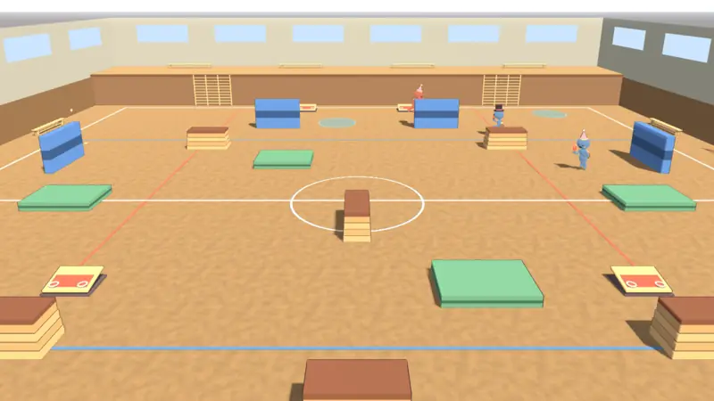
Sportunterricht, nur mit Glühbirnen. Sprungkästen und Matten geben Deckung, Bänke und eine Tribüne an der Nordwand bringen dich nach oben.
Nur hier: Sprossenwände. Lauf einfach dagegen und du kletterst hoch. Statt Sprungfedern gibt es Sprungbretter.
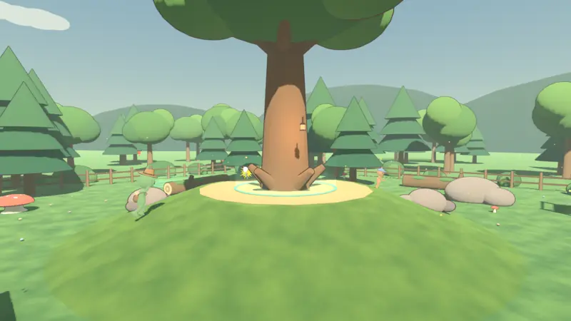
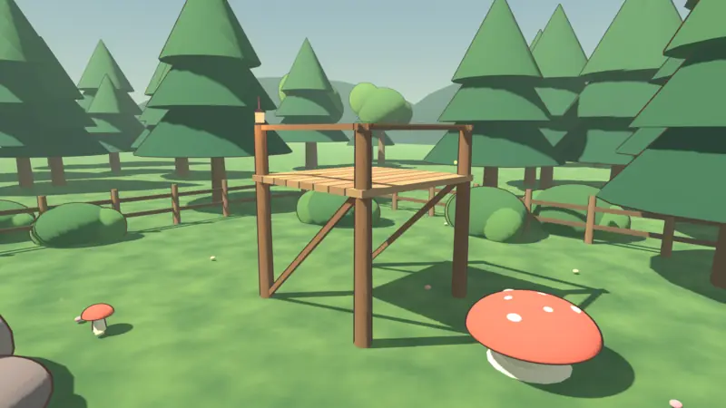
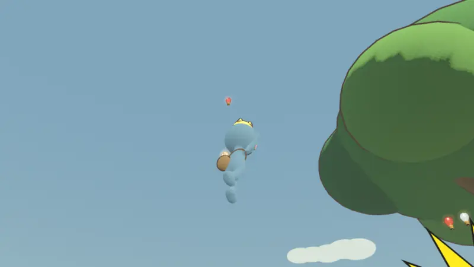
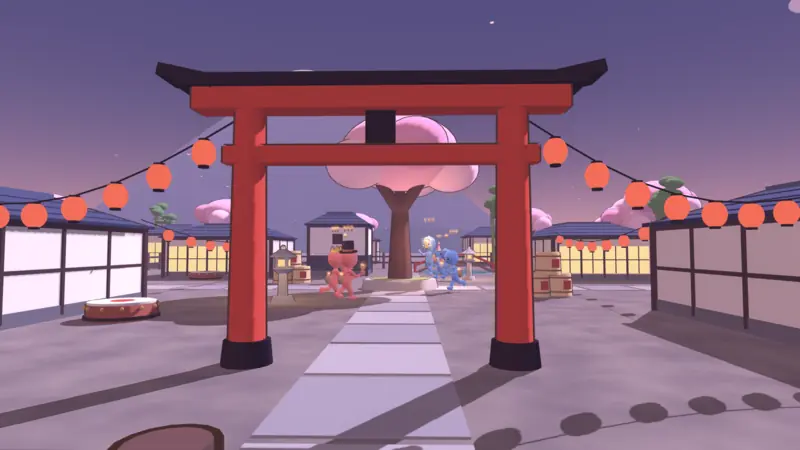
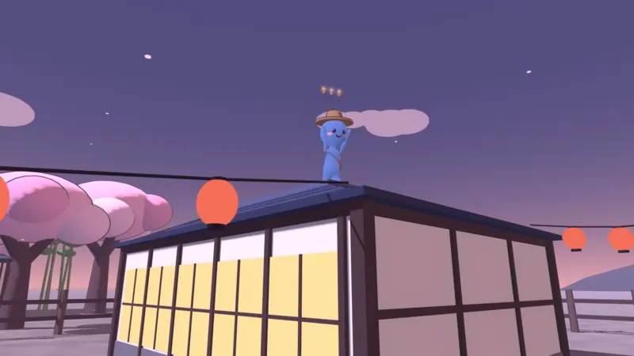
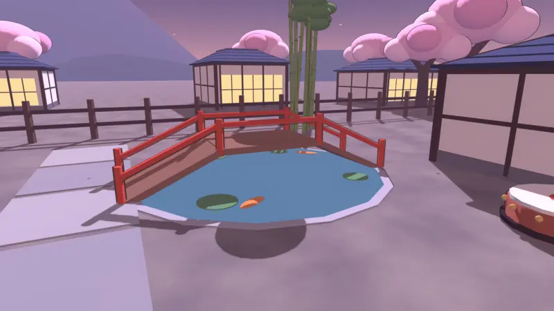
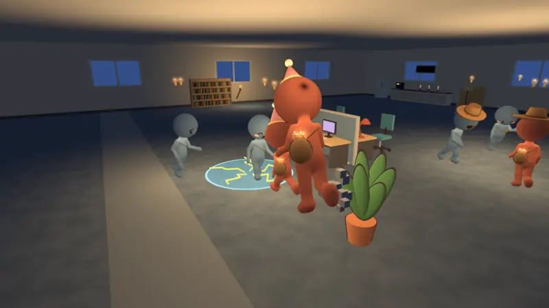
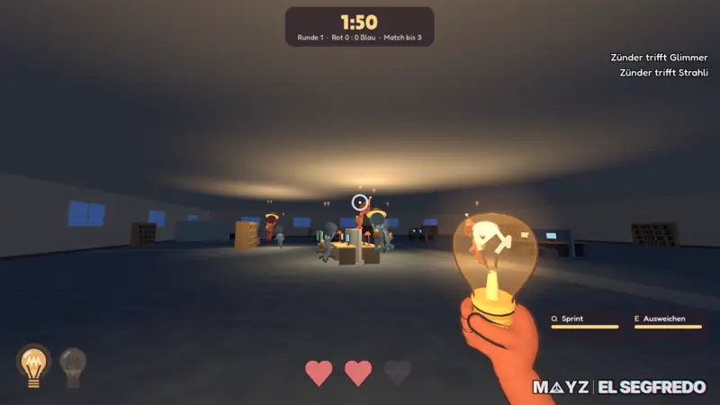
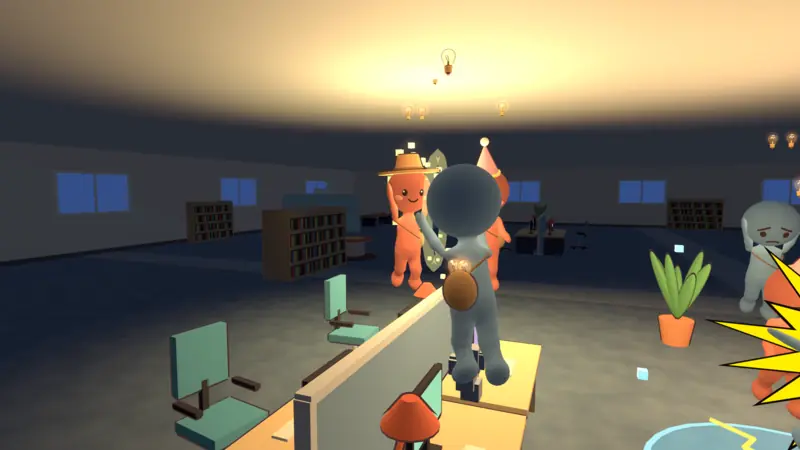
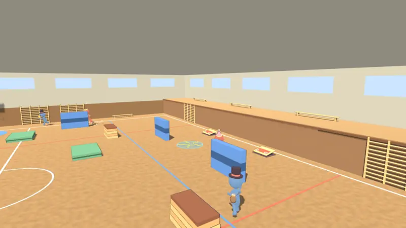
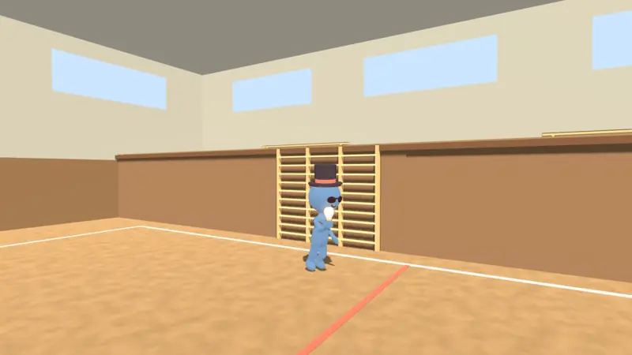
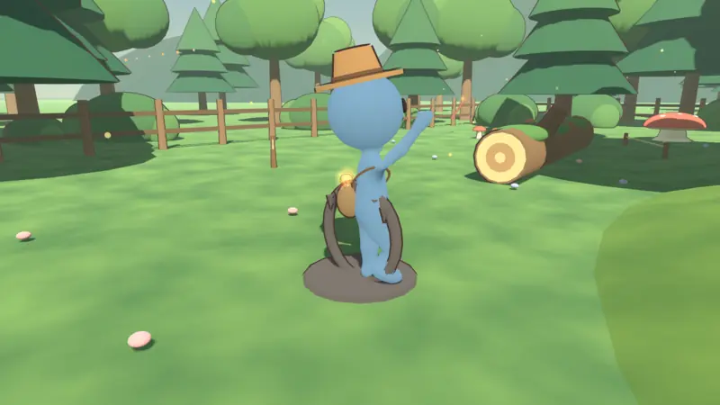
Im japanischen Dorf bekommt jede Figur vier Extra-Fähigkeiten. Karten unten rechts zeigen, was gerade bereit ist. Auf den anderen Maps gelten sie nicht, dort gibt es Sprint und Ausweichen.
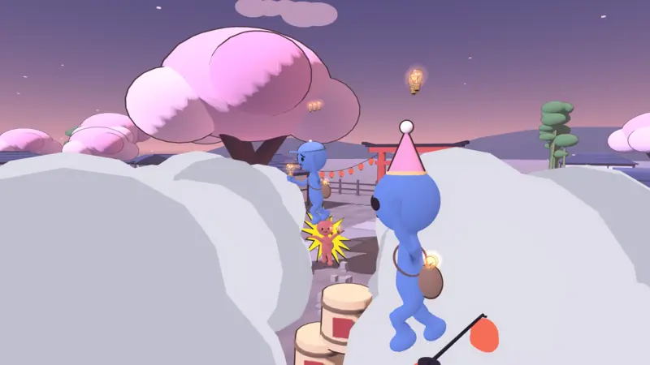
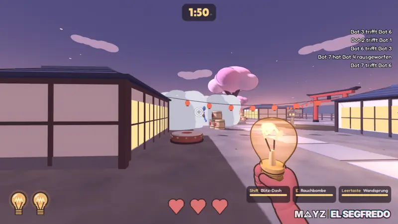
E oder Shift · 3 s Abklingzeit
Ersetzt im Dorf die Ausweichrolle: ein Satz von knapp 4 Metern, auch waagerecht durch die Luft. Solange bist du immun.
In der Luft schräg an die Wand
Die Figur läuft bis zu 1,3 Sekunden an der Wand entlang, perfekt für die Abkürzung durch die Gasse.
Leertaste an der Wand · bis zu 3×
Hoch und von der Wand weg, bis zu dreimal ohne Bodenkontakt. Wandlauf plus Wandsprung bringt dich aufs Dach.
R · 5 s Rauch · 12 s Abklingzeit
Eine Rauchwolke vor deinen Füßen. Darin verschwinden Name und Anzeigen über dem Kopf, und Bots können dich nicht anvisieren. Birnen fliegen trotzdem hindurch.
Aufnahmen aus einer Testrunde mit Bots. Zum Vergrößern antippen.
Alle Bilder zeigen den Demo-Stand. Grafik, Sound und Oberfläche ändern sich noch.
Was sich zuletzt getan hat, die neuesten Meldungen zuerst.
Zwei neue Maps und ein neuer Modus. Im Büro wird es dunkel: Birnen schraubst du aus den Lampen, und wer eine hält, leuchtet. In der Turnhalle geht es über Sprungkästen, Bänke und Sprossenwände. Im Modus Rollen spielt jedes Team mit Fängern und einem Heiler.
Würfe lassen sich jetzt aufladen, Q ist Sprint, E die Ausweichrolle. Daneben geworfene Birnen hinterlassen Elektropfützen, im Wald und im Dorf lauern Fallen. Und mit T gibt es Emotes, Achselfurz inklusive.
Vor dem Match stehen drei zufällige Maps zur Wahl. Mehr als die Hälfte der Stimmen entscheidet sofort, sonst dreht sich nach zwölf Sekunden ein Glücksrad.
Gespielt wird jetzt bis zu einer festen Zahl an Rundensiegen, danach gibt es Podest und Konfetti. Neu sind auch Bots in drei Stufen, Lobby-Einstellungen im Pausenmenü, Grafikstufen und fertige Programme für Mac und Windows zum Testen.
Die dritte Map ist ein japanisches Dorf in der Abenddämmerung, mit Kirschbaum, Torii, Teich und Dächern, auf die man klettern kann. Nur hier gibt es Ninja-Skills: Wandlauf, Wandsprung, Rauchbombe und Blitz-Dash. Mehr dazu unter Ninja.
Die Maps leben: Am Strand kommt die Flut und die Insel steht knietief unter Wasser, im Wald zieht dichter Nebel auf. Eine Ansage unter der Uhr warnt dich, etwa „Die Flut kommt!“.
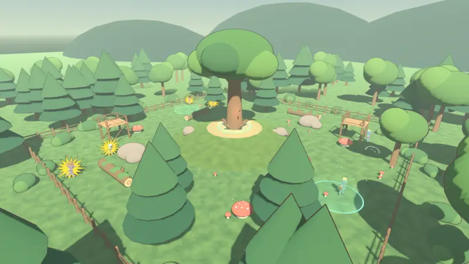
Auf der Wald-Map wird es hügelig: Riesenbaum, Hochsitze und Fliegenpilze. Dazu kommt der Modus Farben, jeder gegen jeden mit roten, gelben und weißen Birnen.
Jede Runde beginnt mit 3, 2, 1, Los!. Neu sind außerdem ein Fadenkreuz mit Ladering, Lichtblitze beim Zerplatzen, Staub bei der Landung und eine neue Rundenende-Karte.
Ab jetzt gibt es hier Neuigkeiten und Bilder aus der Demo, auf Instagram unter @bulbfight das Intro und kurze Spielszenen.
Eine geschlossene Faust hält die Birne jetzt unten am Sockel. Das Glas bleibt frei, auch in der Ich-Ansicht.

Vor jedem Start laufen jetzt die Karten: Idee von Mayz, entwickelt von El Segfredo, Musik von Mayz, eine El Segfredo Production. Dann leuchtet der Titel.
Rot gegen Blau, drei Leben pro Figur, 120 Sekunden. Dazu kamen die Sprungfedern und die Statistik-Karten am Rundenende.
Aus der Idee wird ein Spiel: Strand-Insel, Strichmännchen, der Modus Fangen und Runden gegen Bots im lokalen Netzwerk.
So sieht der Plan aus. Termine gibt es erst, wenn sie feststehen.
Vier Modi auf fünf Maps, Matches mit Siegerehrung, Bots in drei Stufen und Spielen im lokalen Netzwerk.
Feintuning an Wurf, Treffer und Bewegung, dazu weitere Modi und Maps.
Online-Lobbys, Freunde einladen, Spielersuche.
Weitere Maps, Kosmetik, Steam-Seite und Veröffentlichung.
Genau so, wie es im Vorspann läuft.

Eine Idee von Mayz@this.is.mayz
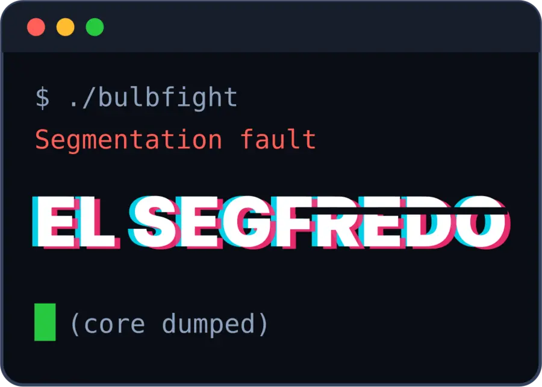
Entwickelt von El Segfredoel segfredo

Musik von MayzSoundtrack in Arbeit

Eine El Segfredo ProductionProduktion
BULBFIGHT hat jetzt einen eigenen Instagram-Account: Neue Szenen, Bilder und Ankündigungen gibt es dort zuerst. Hinter den Kulissen geht es bei @elsegfredo weiter. Sobald die Steam-Seite steht, kannst du BULBFIGHT dort auf die Wunschliste setzen.
Du willst mithelfen, testen oder darüber berichten? Hier geht's zur Zusammenarbeit.Ob Artikel, Video oder Stream: Schreib einfach an bulbfight@protonmail.com oder per Instagram-Nachricht. Logos, Bilder und Infos gibt es dann passend für dich.